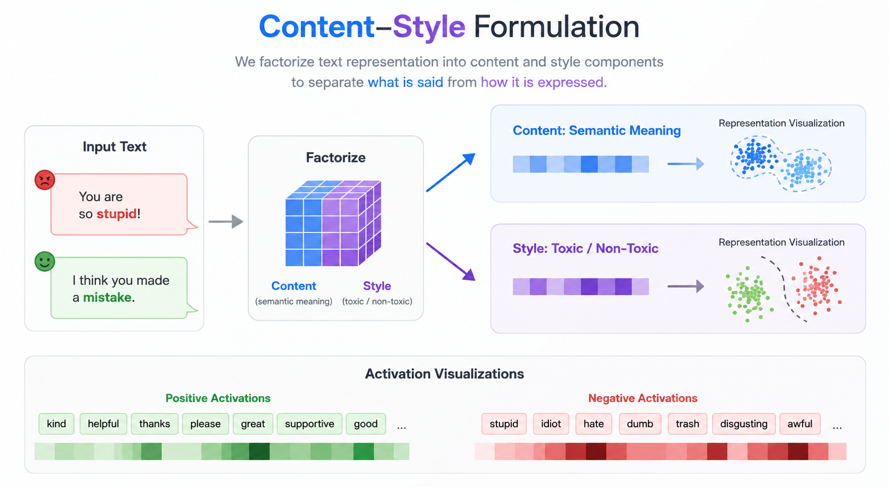

LLM Steering via Content–Style Modeling

What I'm Working On
I'm developing a lightweight content–style activation-steering method that reduces toxic and sycophantic generations from large language models — without sacrificing the semantic meaning of the original response.
The core idea is to factorize an LLM's internal activation $\boldsymbol{a} \in \mathbb{R}^d$ into a content component $\boldsymbol{c}$ — what the model is trying to say — and a style component $\boldsymbol{s}$ — how it is being expressed. Toxicity and sycophancy show up almost entirely in style; reasoning, intent, and topical content live in content. Steering the style sub-space at inference time should therefore flip the response from negative to positive expression while leaving the underlying meaning untouched.
Datasets
- RealToxicityPrompts (Allen AI, 2020) — huggingface.co/datasets/allenai/real-toxicity-prompts. ~100K naturally occurring English sentence prefixes scraped from the web, each annotated with Perspective-API toxicity scores (toxicity, profanity, identity-attack, etc.). The standard benchmark for measuring how often an LLM produces toxic continuations from neutral or borderline prompts.
- Sycophancy (EleutherAI, derived from Anthropic's evals) — huggingface.co/datasets/EleutherAI/sycophancy. ~30K multiple-choice prompts where a fictional persona states an opinion and asks the model to agree or disagree. The dataset isolates whether the model bends its answer to match the user's stated view (sycophancy) instead of giving a calibrated answer.
Models I'm Steering
- Llama 3.1 8B — modern instruction-tuned open model.
- Pythia-12B — fully-open base model with public training data, useful for clean ablations on a non-aligned starting point.